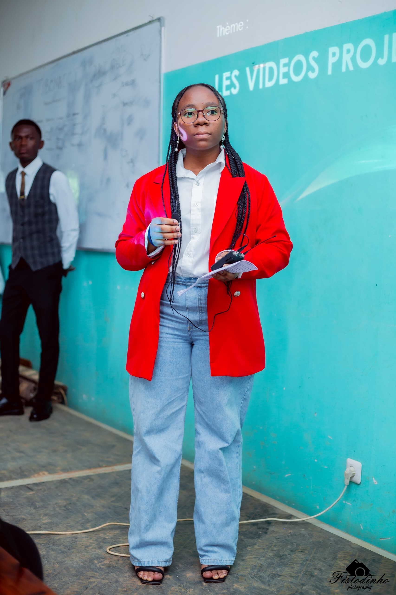

À Propos de Moi
Bonjour! Je m'appelle Priscilia TSHIMUNA, je suis une étudiante dynamique
et motivée en Informatique à UDBL. Passionée par le développement Web,
l'Intelligence Artificielle et design graphique, je suis constamment à la
recherche de nouvelles oppurtunités d'apprentissage et de défis stimulants.
Au cours de mes études, j'ai développé de solides compétences en programmations.
Je suis une personne rigoureuse, créative et j'aime travailler en équipe pour
atteindre des objectifs communs. Mon objectif est de contribuer à des projets
innovants, trouver un stage et maitriser le Framework Laravel.
Mes Compétences
| CATÉGORIE | COMPÉTENCES | NIVEAU |
|---|---|---|
| Programmation | HTML, CSS, JavaScript, Python | Avancé |
| Design | Figma, PhotoShop (bases) | Intermédiaire |
| Langues | Français, Anglais (fluide) | Avancé |
| Outils | Git, VS Code, Suite Office | Avancé |
| Soft Skills | Communication, Résolution de problème, Autonomie | Expert |